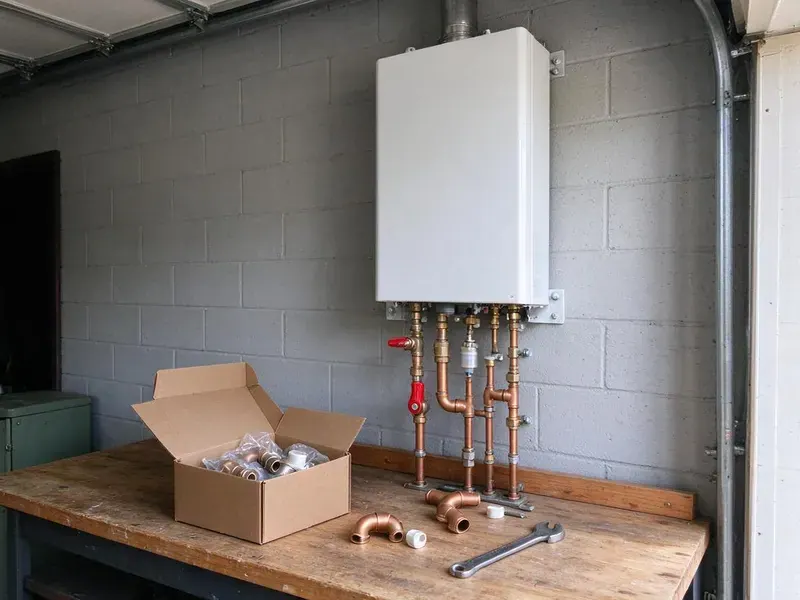

Water Softener Installation in Hagerstown, MD
Water softener installation in Hagerstown, MD at a fair price, from plumbers who test first.
- Prompt Local Service
- Licensed Plumbers
- Quick Softener Installs
- Name Brands
Save Your Pipes and Appliances in Hagerstown, MD
Call (443) 719-1650 to schedule a water test and softener install.
Whole-House Water Softeners for Hagerstown, MD
BVL Plumbing installs softeners throughout Hagerstown, MD. Homes on private wells, especially in the low coastal counties, often deal with rusty mineral staining, odors or acidity that call for filtration or treatment. Over the years that scale coats the inside of pipes, shortens the life of water heaters and dishwashers and leaves skin feeling dry after a shower. A softener stops it.
Some of what we do:
- Hardness tests and sizing
- Softener sizing by grain capacity
- Loop installs and bypass valves

Additional Plumbing Installation Services in Hagerstown, MD
We install water heaters, pumps, lines, and fixtures across Hagerstown, MD with precision workmanship that meets every local code.


Customers
Why Choose BVL Plumbing for Water Softener Installation in Hagerstown, MD?
Hard water shortens the life of water heaters, dishwashers and faucets and leaves scale on shower glass. A properly sized softener protects your plumbing and cuts down the hours you spend scrubbing spots off glass and tile. It helps every appliance.
- Cleaner Home, Fewer soap scum and hard water spots on fixtures and dishes.
- Good Systems, We install long-lasting softeners from established brands.
- Proper Sizing, We size by grain capacity and daily use.
Citywide Coverage
Homes and condos throughout Hagerstown are regular work for us. A pre-plumbed loop in newer homes makes installs faster.
Experienced Team
Softeners, conditioners and filters are regular work for our plumbers. Programming valves and setting regeneration is routine for them.
Safety-First Approach
Local plumbing code is followed on every softener we install. Drain and electrical connections get checked every time.
Trusted Certified Hagerstown Plumbing Services Professionals
At BVL Plumbing, we take pride in licensed, certified plumbing services throughout Hagerstown, MD. Credentials matter in this trade. Every repair, install and maintenance visit follows strict safety and quality rules, and the plumbers doing the work carry recognized industry credentials.
Call Us Now PHCC Plumbing Contractor Recognition
PHCC Plumbing Contractor Recognition Better Business Bureau (BBB) Accreditation
Better Business Bureau (BBB) Accreditation Angi Certified Pro
Angi Certified Pro ISO 9001 Quality Management Certification
ISO 9001 Quality Management CertificationWater Softener Installation Services in Hagerstown, MD
Salt-Based Water Softener Systems in Hagerstown, MD
Salt-based softeners use ion exchange, swapping calcium and magnesium for sodium on a bed of resin beads. BVL Plumbing sets them up with the right resin and brine tanks. A metered control valve regenerates only when needed, which keeps salt and water use down. Most effective option.

Culligan Water Softener Installation in Hagerstown
Culligan systems are common in homes around here, and we install and connect them. We follow Culligan's requirements for the drain, bypass and electrical, and we program the system for your tested hardness so it does not over-regenerate. Connections and setup included. Existing loops make it faster.
Commercial Water Softener Installation in Hagerstown, MD
Restaurants, hotels and laundromats feel hard water in their equipment first. Commercial softeners we install use larger resin tanks or twin-tank alternating systems so soft water is available around the clock, even during regeneration. Dishwashers and boilers last longer. We schedule around your hours.
Whole-Home Water Softener Installation in Hagerstown
Whole-home softeners treat every gallon that enters the house, right after the main shutoff. That protects every faucet, shower, water heater and appliance downstream, which is where hard water does most of its damage over the years. We size before we sell. Your test result and water use decide the tank size.
Whole-House Water Softener Systems in Hagerstown
On a whole-house system, the softener goes on the main line after the shutoff and before the water heater. Every whole-house install gets a bypass valve, and we add a pressure reducing valve if incoming pressure is too high. Soft water reaches every fixture. Outdoor taps can be left off.
Water Softener Replacement in Hagerstown, MD
Older softeners lose ground as resin wears out, valve seals leak or injectors clog. We remove the old unit and install a new metered model, then check the loop and drain line while everything is apart. Metered valves save salt. Performance comes back right away.
Residential Water Softener Installation in Hagerstown
Hard water costs homeowners money in shorter appliance life and extra cleaning. Our residential installs start with a test and a few questions about water use, then we pick a grain capacity that regenerates about once a week for your household. That keeps salt use reasonable. One visit covers the full install.

Water Softener Replacement Services in Hagerstown, MD
Worn-out softeners usually show it in one of two ways, hard water at the tap or a brine tank that never drops. Our crew pulls the old system, checks the loop and drain line and installs a model matched to your water today. Disposal is included. The work is usually done in a few hours.
Water Softener Installers Near You in Hagerstown, MD
Searching for water softener installation near me in Hagerstown, MD usually starts with scale on a new faucet. BVL Plumbing has crews nearby with test kits ready, which means a hardness test on the first visit and an install soon after. Testing is free.
Local plumbers know local water, and BVL Plumbing has tested a lot of it. Years of tests around the area tell us which systems work and when iron or chlorine needs a separate filter. We respond fast.
BVL Plumbing at a Glance
- Licensed and insured plumbers serving Hagerstown, MD
- 24/7 emergency service with same-day scheduling
- Upfront, flat-rate pricing before work begins
- 4.8-star rated by 542+ Maryland customers
Hagerstown Map
Hagerstown Information
- Population
- 43,553
- Area codes
- 301/240/443
- Service area
- Hagerstown and communities within 40 miles
- Nearby
- Frederick, Germantown, Gaithersburg, Rockville
Calcium and magnesium build up inside pipes, valves and appliances over time, so a softener saves repairs in Hagerstown, MD homes.
Expert Services
Reach out to BVL Plumbing for honest, reliable plumbing from people who know the trade in Hagerstown, MD.
Our Specialized Plumbing Services in Hagerstown, MD
At BVL Plumbing, you get every kind of plumbing service from one company across Hagerstown, MD. From leak detection to full system installs, our team works fast and charges fair prices on homes and commercial properties alike. Take a look at our core services below:


How It Goes on a Softener Install in Hagerstown, MD
The goal is soft water that lasts for years.
Request a Quote
Contact us at (443) 719-1650 to set up a visit. We test your water and give you a detailed quote with no obligation.
System Selection
Our plumbers help you pick a softener based on hardness, use and budget.
Installation
Licensed plumbers install the softener, with all plumbing to code, then test it.
Frequently Asked Questions About Water Softener Installation in Hagerstown
Water softener installation in Hagerstown, MD usually runs $1,500 to $4,000. Where you land depends on the type and size of the system and whether we need to change any plumbing. New loops cost more. We quote after an on-site test.
Softeners remove hardness minerals using salt. Conditioners change how minerals behave to reduce scale, but softeners work better on very hard water.
Adding salt every 4 to 8 weeks is most of the work. A yearly checkup with a plumber catches worn seals, salt bridges in the brine tank and clogged injectors before they cause hard water. Do not let the salt run out.
A softener targets calcium and magnesium to stop scale. A filter removes things like chlorine and sediment to improve taste and safety, and plenty of homes use both together.
Some homeowners try it, but we recommend a plumber. A mistake on the bypass, drain or programming means leaks or water that never softens. Warranties often require pro installs.
Control valves usually carry about 5 years, and tanks often 10 or more. We also warranty our installation work.
Homes with hard water usually benefit from one. Homes on private wells, especially in the low coastal counties, often deal with rusty mineral staining, odors or acidity that call for filtration or treatment. Softeners protect water heaters, fixtures and appliances from scale.
Less scale in pipes and appliances is the big one. You also get longer appliance life, lower soap use, softer skin and much easier cleaning. Clothes come out softer.
Hear From Customers Who Hired Our Plumbing Experts

Sofia M.
Two new toilets went in during one visit. The tech set them on new wax rings and swapped the old supply lines. He also noticed our bathroom faucet dripping and replaced the cartridge while he was there. No mess left behind.
Toilet Installation · Frederick, MD
Karen W.
After our third pinhole leak in copper, we stopped patching. BVL Plumbing gave us a written plan room by room and repiped the house in PEX while we stayed in it. The crew covered our floors every morning and cleaned up every night.
Repiping · Aspen Hill, MD
Greg S.
I manage a small strip center with six tenants. BVL Plumbing handles our annual backflow testing and fixed a recurring clog in the shared sewer line that had been backing into the nail salon. Their reports come in clean and on time.
Commercial Plumbing · Rockville, MD
Lisa C.
Water was pouring out from under the washing machine on a holiday weekend. BVL Plumbing talked me through closing the valves over the phone and had a plumber at the house within ninety minutes. It was a burst fill hose.
Emergency Plumbing · Germantown, MD
Robert G.
The camera showed a full break in our clay sewer line near the street. BVL Plumbing replaced it with a trenchless pipe burst, so the only digging was two small pits in the yard. They let us watch the footage before and after.
Sewer Line Replacement · Germantown, MDDiane F.
My kitchen faucet had dripped for months and I finally got tired of hearing it at night. BVL Plumbing came out the next morning, replaced the cartridge and the O rings, and tightened a loose base that was letting water under the sink.
Faucet Repair · Gaithersburg, MD